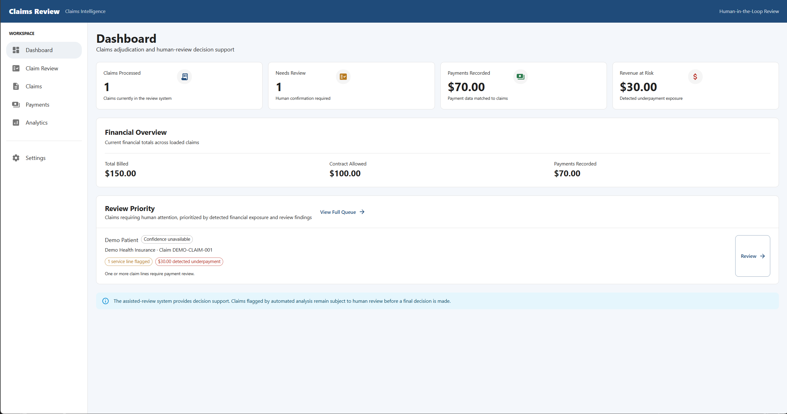
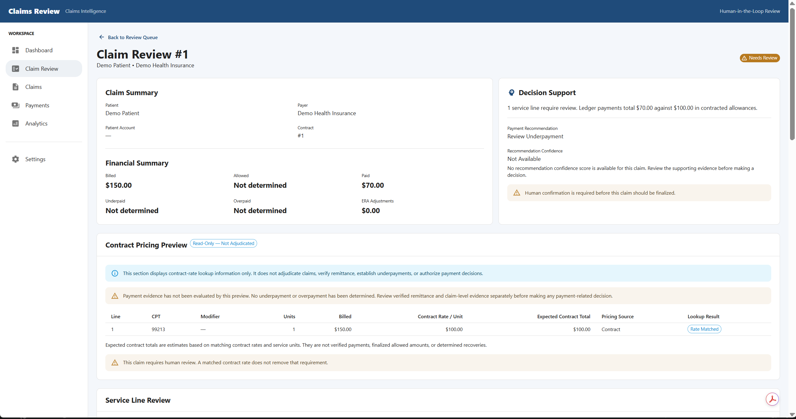
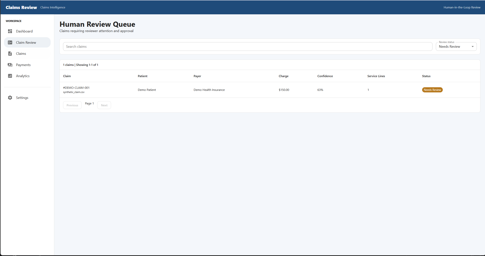

Building Frontier: Human-Centered AI
Author: Obed Perales
Date: November 22, 2026
Project Frontier — HCI Capstone Project
Category: Software Development | Human-Computer Interaction | Artificial Intelligence
Introduction
My name is Obed Perales, and I am currently developing Frontier as part of my master's capstone project. My professional background includes information technology, systems administration, technical support, and software development. My goal is to combine my technical experience with human-computer interaction (HCI) principles to develop practical software solutions that improve how people work. Frontier is an AI-assisted medical claims review application designed to help reviewers identify potential billing discrepancies, compare reimbursement information, and make more informed decisions. One of my primary goals is to ensure that technology supports human judgment rather than replacing it.
Features Developed This Month
November has been an important month for Frontier. I concentrated on strengthening the application, validating its functionality, improving its research design, and preparing a stable prototype for evaluation. 1. Medical Claims Processing and Validation I worked on validating the application's ability to process structured medical claims data, normalize claim information, and identify discrepancies between expected reimbursement amounts and payments. The application uses Python and FastAPI for backend processing, with React and TypeScript supporting the user interface. 2. Human-in-the-Loop Review Workflow An important part of Frontier is its human-centered design. The system identifies possible discrepancies and presents supporting information, but the reviewer retains responsibility for the final decision. This approach is intended to reduce unnecessary manual effort while preserving accountability and human oversight. 3. Application Testing and Milestone 2 I prepared and published Frontier's Milestone 2 build, version v2.0.0-milestone2, through GitHub. As part of this milestone, I strengthened application-readiness testing and verified that all 84 regression tests passed. These tests provided evidence of application stability and helped identify areas requiring additional verification before usability evaluation. 4. Research and Usability Evaluation I also refined the research plan to compare traditional manual claims review with Frontier-assisted review. My research focuses on three outcomes: task completion time, perceived cognitive workload, and review accuracy. The study design includes a counterbalanced within-subjects comparison and NASA-TLX workload measurement.
Frontier uses Python, FastAPI, React, and TypeScript. The application is designed to identify potential billing discrepancies while allowing reviewers to make final decisions.
Development Screenshots
These screenshots demonstrate the development of Frontier and its human-centered medical claims review workflow.



Challenges and Solutions
One of my biggest challenges this month was balancing software development with the academic requirements of a master's-level research project. Building a functional application is only one part of the process. I also need to demonstrate that the system can be evaluated using reliable research methods. Another challenge was ensuring that Frontier's automated recommendations remain explainable and that reviewers do not become overly dependent on them. To address these challenges, I focused on strengthening testing procedures, clarifying the research hypotheses, and preserving human decision-making within the review workflow. I also identified technical improvements that remain necessary, including additional end-to-end testing, security review, and frontend performance optimization.
Advisor Feedback
My advisor provided valuable feedback on the research proposal, particularly regarding the clarity of the hypotheses, differences in participant experience, and the methods used to identify discrepancies. This feedback helped me recognize the importance of controlling research variables and clearly distinguishing between automated decision support and autonomous decision-making. I refined my research approach to better explain how Frontier will be evaluated and how the results will be interpreted.
Monthly Retrospective
What Went Right?
I successfully advanced the Frontier prototype, strengthened its regression testing, published the Milestone 2 build, and improved the connection between the application's technical features and its HCI research objectives. The successful completion of 84 regression tests was an especially important achievement because it provided measurable evidence of progress.
What Went Wrong?
Some development tasks required more time than originally anticipated. Research documentation, testing, and preparation for demonstrations competed with time allocated to feature development. I also recognized that automated tests alone cannot establish usability or production readiness. Additional evaluation is necessary.
How Can I Improve?
Moving forward, I plan to establish clearer priorities, maintain consistent development documentation, and allocate dedicated time for testing and research activities. I will continue using GitHub for version control and Trello for project management.
Next Steps
My next phase will focus on completing remaining prototype verification, preparing the usability study, refining the research instruments, and addressing feedback from my advisor. I intend to evaluate whether Frontier can reduce review time and perceived workload while maintaining or improving review accuracy. Although substantial work remains, I am encouraged by the progress made this month and look forward to continuing the development and evaluation of Frontier.